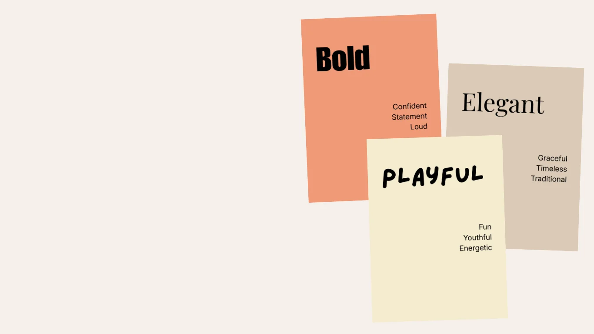
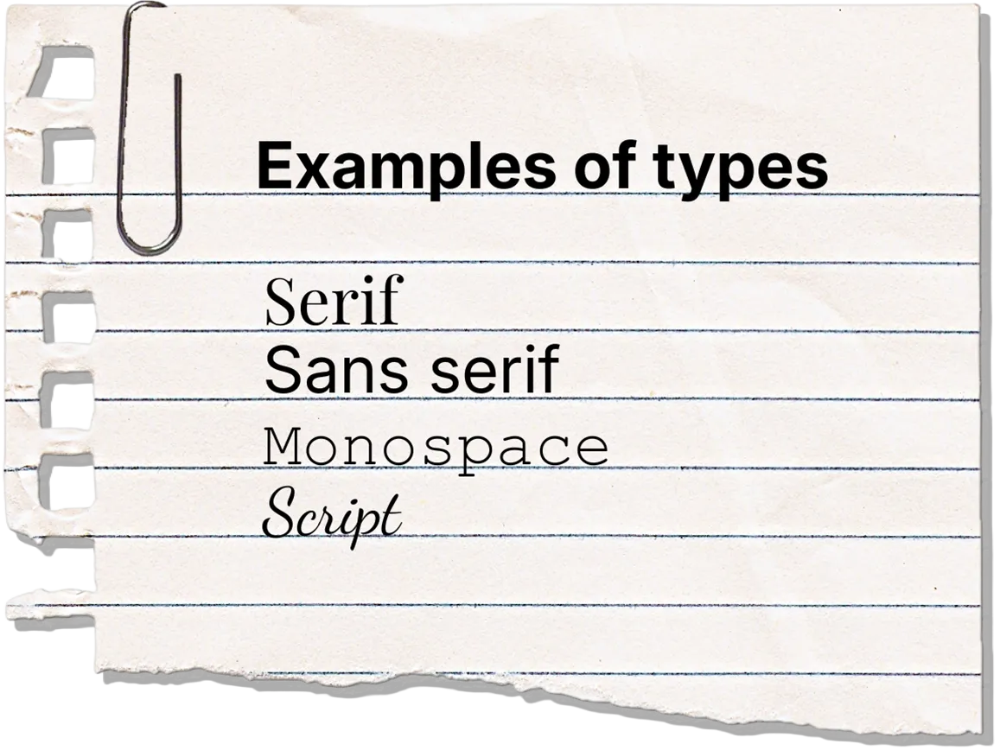
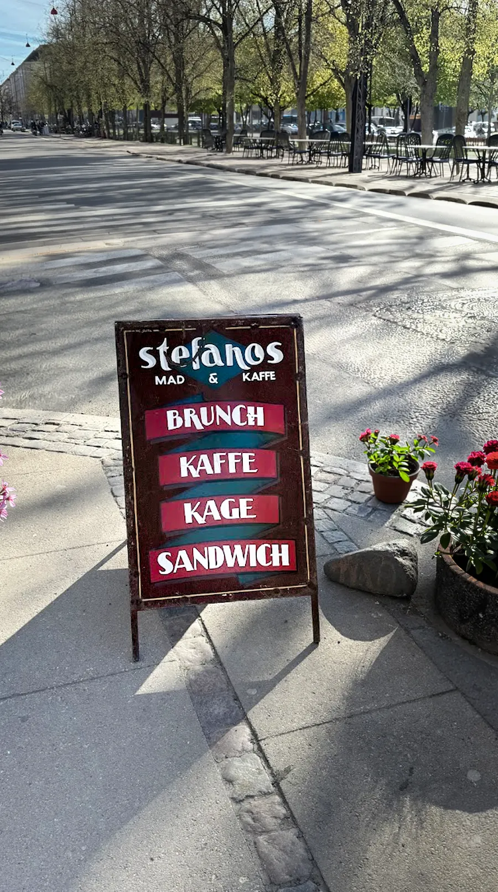
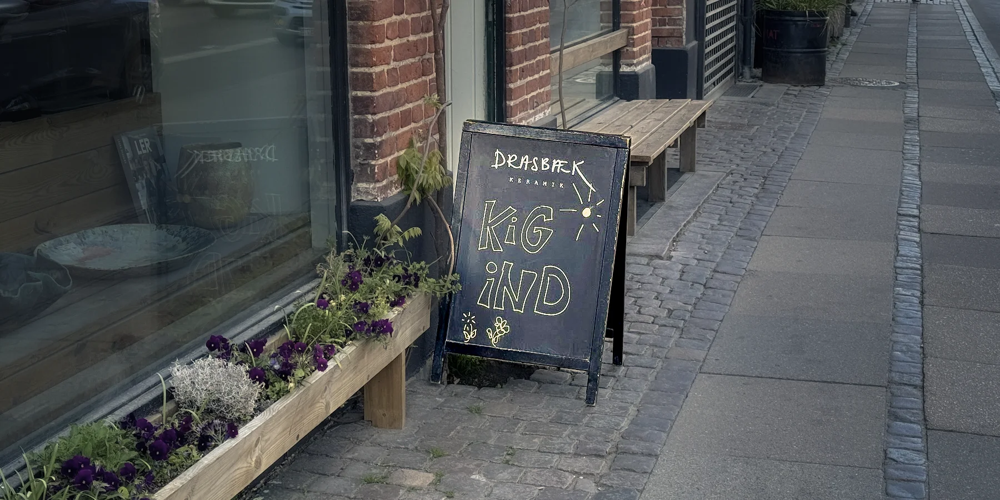
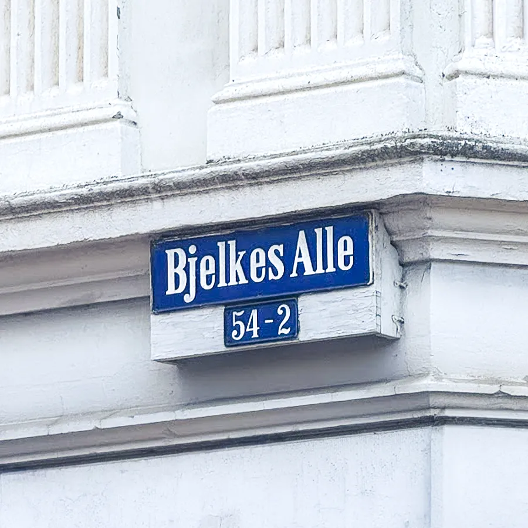
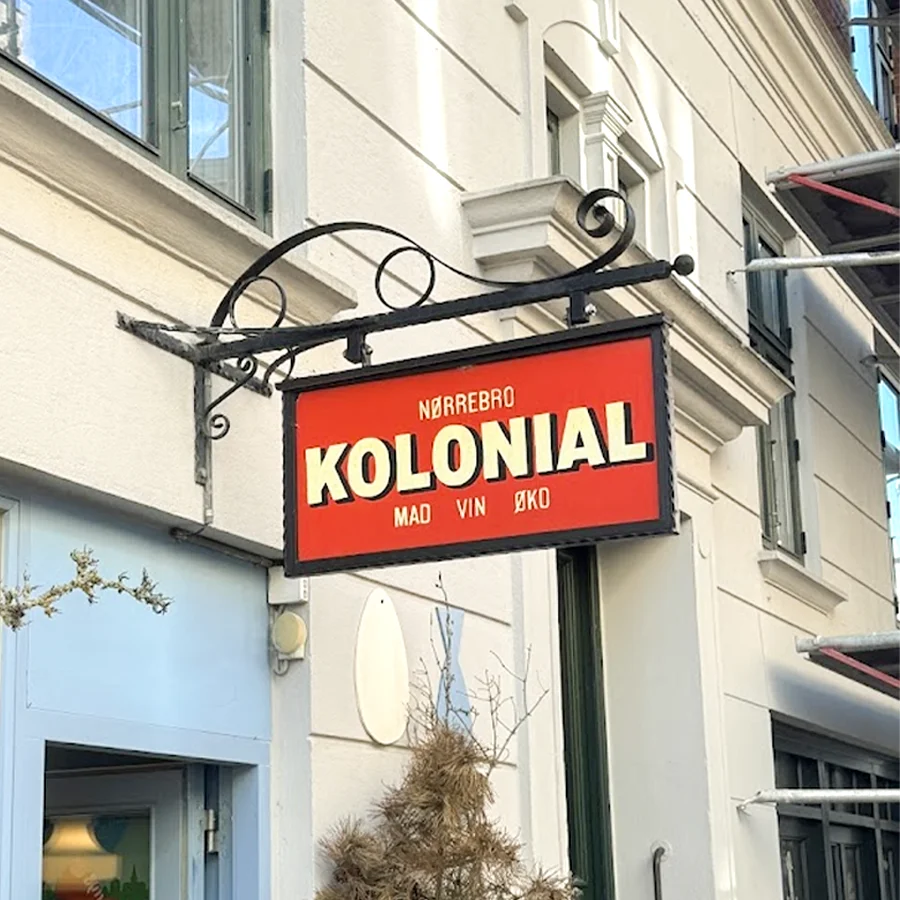

No typeface is neutral
Meaning begins before the first word.
A sentence can feel credible, ironic, or completely out of place, depending on the typeface. Before we engage with the meaning of the words, we've already formed a judgement.
Choosing a typeface is part of shaping how something is understood - in branding, in design, and in everyday communication.
Typography in everyday life
Examples from Copenhagen: How type shows up around us.



